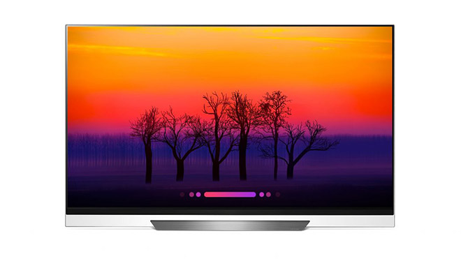
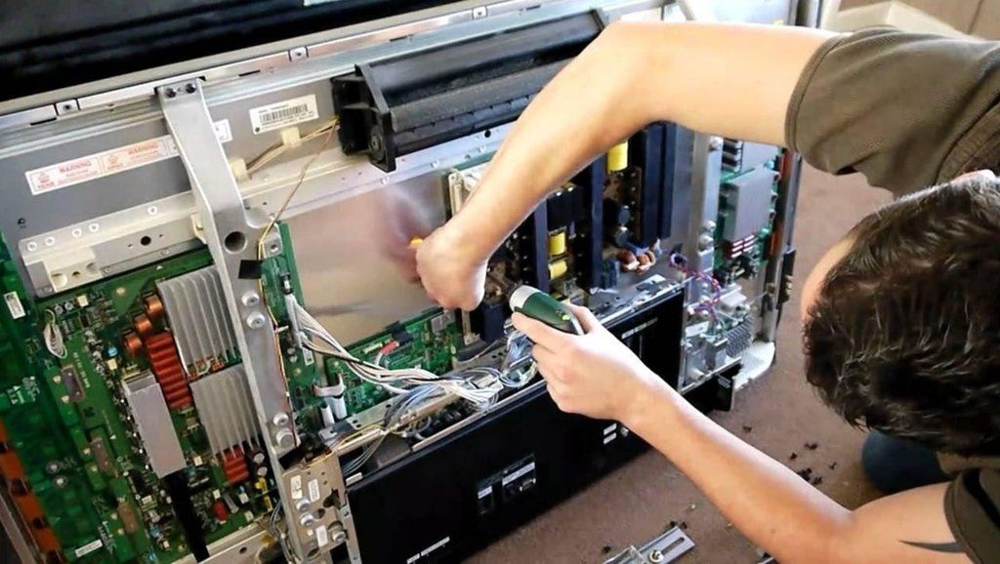
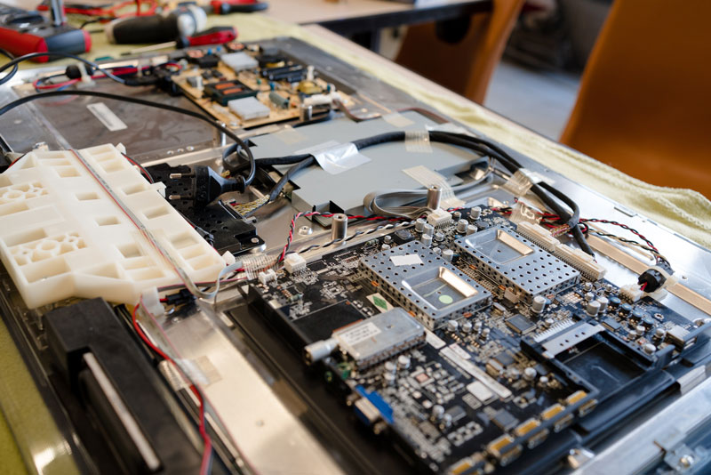
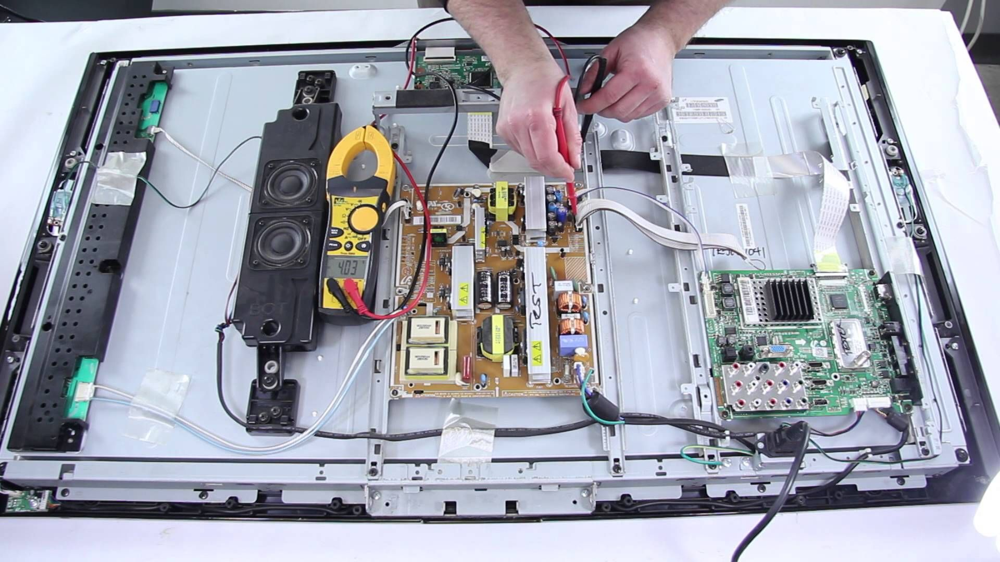
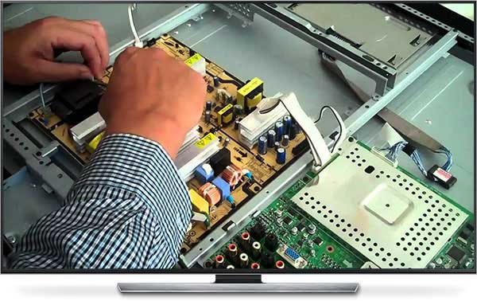

Konya Televizyon Tamiri ve Teknik Servis: Televizyon Arızaları, Bakımı ve Profesyonel Çözümler
Günümüzde televizyonlar, evlerimizin ve iş yerlerimizin vazgeçilmez elektronik cihazları arasında yer alıyor. Özellikle Konya gibi büyük şehirlerde, televizyonun arızalanması günlük yaşamı olumsuz etkileyebiliyor. LCD, LED, OLED ve plazma televizyonlar; gelişen teknolojiyle birlikte daha karmaşık hale gelirken, arıza ve bakım ihtiyaçları da artıyor. Peki televizyon tamiri nasıl yapılır, hangi arızalar sık görülür ve Konya’da güvenilir bir televizyon teknik servis hizmeti nasıl seçilir? Tüm bu soruların yanıtlarını ve daha fazlasını bu yazımızda bulabilirsiniz.
Televizyon Arızaları Nelerdir? En Sık Karşılaşılan Sorunlar
Televizyonlar, hassas elektronik devreler ve ekran panelleriyle donatılmıştır. Bu nedenle çeşitli nedenlerle arızalanabilirler. Konya’da en sık karşılaşılan televizyon arızaları şunlardır:
- Görüntü Gelmiyor: Ekranda hiç görüntü olmaması, genellikle panel, inverter veya anakart arızasından kaynaklanır.
- Seste Sorun: Televizyondan ses gelmemesi hoparlör, ses entegresi veya yazılım kaynaklı olabilir.
- Görüntüde Çizgiler ve Lekeler: Panel arızası, T-Con kartı veya bağlantı kablolarındaki sorunlar bu tip arızalara yol açar.
- Kumanda Çalışmıyor: Alıcı göz, kumanda veya yazılım problemleri nedeniyle televizyon kumandaya tepki vermeyebilir.
- Kendi Kendine Kapanma: Güç kartı, yazılım veya aşırı ısınma gibi nedenlerle televizyon beklenmedik şekilde kapanabilir.
- HDMI/USB Girişi Çalışmıyor: Bağlantı noktalarındaki fiziksel hasar veya anakart arızası bu soruna yol açabilir.
Bu ve benzeri arızalar, profesyonel bir televizyon teknik servis tarafından doğru şekilde tespit edilip onarılmalıdır. Yanlış müdahaleler, cihazınızda daha büyük hasarlara yol açabilir.
Televizyon Bakımı Neden Önemlidir? Düzenli Bakımın Avantajları
Televizyonunuzun uzun ömürlü ve yüksek performanslı çalışabilmesi için düzenli bakım şarttır. Özellikle Konya gibi tozlu ve sıcak iklimlerde, cihazın iç aksamında biriken toz ve kir, elektronik devrelerin ısınmasına ve arızalanmasına neden olabilir. Televizyon bakımı sayesinde:
- Daha Uzun Ömür: Düzenli bakım, televizyonunuzun ömrünü uzatır ve pahalı arızaların önüne geçer.
- Görüntü ve Ses Kalitesinde Artış: Temizlenen ve kontrol edilen cihazlar, ilk günkü gibi net görüntü ve kaliteli ses sunar.
- Enerji Tasarrufu: Bakımlı televizyonlar daha az enerji harcar, elektrik faturalarınızı düşürür.
- Güvenli Kullanım: Elektriksel kaçak ve kısa devre riskleri en aza iner, evinizde güvenli bir ortam sağlanır.
- Garanti ve Servis Kolaylığı: Düzenli bakım, garanti kapsamındaki arızaların daha hızlı çözülmesini sağlar.
Televizyon Bakımı Nasıl Yapılır? Adım Adım Televizyon Bakım Süreci
Televizyon bakımı, uzman teknik servis ekipleri tarafından titizlikle yapılmalıdır. Konya Etka Elektronik olarak uyguladığımız bakım adımları şunlardır:
- Dış Temizlik: Ekran ve kasa, özel solüsyonlarla toz ve lekelerden arındırılır.
- İç Temizlik: Cihazın içi açılarak fan, devre kartları ve bağlantı noktaları tozdan temizlenir.
- Bağlantı ve Kablo Kontrolü: HDMI, USB, anten ve güç kabloları gevşeklik veya oksitlenme açısından kontrol edilir.
- Yazılım Güncellemesi: Televizyonun yazılımı güncellenerek yeni özellikler ve güvenlik yamaları yüklenir.
- Panel ve Aydınlatma Testi: Ekran paneli, arka aydınlatma ve renk doğruluğu test edilir.
- Ses ve Görüntü Testi: Hoparlörler ve görüntü çıkışı detaylı şekilde kontrol edilir.
- Elektriksel Güvenlik Kontrolü: Kısa devre, kaçak akım ve aşırı ısınma riskleri değerlendirilir.
Tüm bu işlemler, televizyonunuzun sorunsuz ve güvenli şekilde çalışmasını sağlar. Bakım sırasında orijinal yedek parça ve kaliteli ekipman kullanmak, cihazınızın performansını artırır.
Televizyon Tamiri: Hangi Durumlarda Profesyonel Servis Çağrılmalı?
Televizyonunuzda aşağıdaki sorunlardan biriyle karşılaşıyorsanız, mutlaka profesyonel bir teknik servisten destek almalısınız:
- Televizyon açılmıyor veya sürekli kapanıyor
- Görüntüde renk bozulmaları, çizgiler veya kararma var
- Ses çıkmıyor veya cızırtılı geliyor
- HDMI, USB veya diğer girişler çalışmıyor
- Kumanda veya tuşlar tepki vermiyor
- Panel kırılması veya ekran çatlaması
- Yazılım güncellemesi sonrası arıza oluştu
Bu tür arızalar, uzman teknisyenler tarafından doğru ekipman ve orijinal yedek parçalarla onarılmalıdır. Yanlış müdahaleler, cihazınızın tamamen kullanılamaz hale gelmesine neden olabilir.
Konya Televizyon Teknik Servis ve Tamir Hizmetlerinde Neden Etka Elektronik?
Konya’da televizyon tamiri ve teknik servis hizmetlerinde güvenilir bir adres arıyorsanız, Etka Elektronik olarak 30 yılı aşkın tecrübemizle yanınızdayız. Selçuklu, Meram, Karatay ve çevre ilçelerde hızlı, garantili ve uygun fiyatlı televizyon tamiri hizmeti sunuyoruz. Hizmetlerimiz arasında:
- LCD, LED, OLED ve plazma televizyon tamiri
- Anakart, güç kartı, T-Con ve panel onarımı
- Görüntü ve ses arızalarının giderilmesi
- Yazılım güncelleme ve fabrika ayarlarına döndürme
- HDMI, USB ve diğer bağlantı noktalarının tamiri
- Orijinal yedek parça temini ve montajı
- Yerinde arıza tespiti ve hızlı servis
Televizyonunuzda yaşadığınız her türlü arıza ve bakım ihtiyacı için bize ulaşabilir, profesyonel ve garantili hizmetlerimizden faydalanabilirsiniz. Etka Elektronik, Konya’da televizyon teknik servisinde güvenin ve kalitenin adresidir.